EXTRACTION ROYALE
War damage placements
45 locations · 15 per map-HUD zone. The first two comparisons show the finished meshes. Other after images are art proposals for the selected location.
Location map
North up · gold inner city · green middle ring · blue outer region. Tap a pin or choose a numbered location.
ZONE 1 / TILE 104
01 Octagonal building
 Before · Unity map capture
Before · Unity map capture After · Unity prefab
After · Unity prefabThe front corner has caved inward. Masonry collects against the foot of the facade.
Locate this placement on the minimap
World XYZ 96.2, 47.1, 271.9
SM_Megacity_OctBuilding_01_LOD2 · Selected placement
Show map ↑ZONE 1 / TILE 88
02 City gate
 Before · Unity map capture
Before · Unity map capture After · Unity prefab
After · Unity prefabOne corner of the gate has collapsed, with rubble against the surviving arch.
Locate this placement on the minimap
World XYZ -137.5, 46.6, 342.5
SM_Megacity_CityWall_Gate_LOD0 · Selected placement
Show map ↑ZONE 1 / TILE 103
03 Square building
 Before · Unity map capture
Before · Unity map capture After · Damage concept
After · Damage conceptOpen a ragged hole across one wall bay with broken lintels at the base.
Locate this placement on the minimap
World XYZ 101.9, 86.3, -258.7
SM_Megacity_Building_01_LOD0 · Selected placement
Show map ↑ZONE 1 / TILE 104
04 Coliseum outer wall
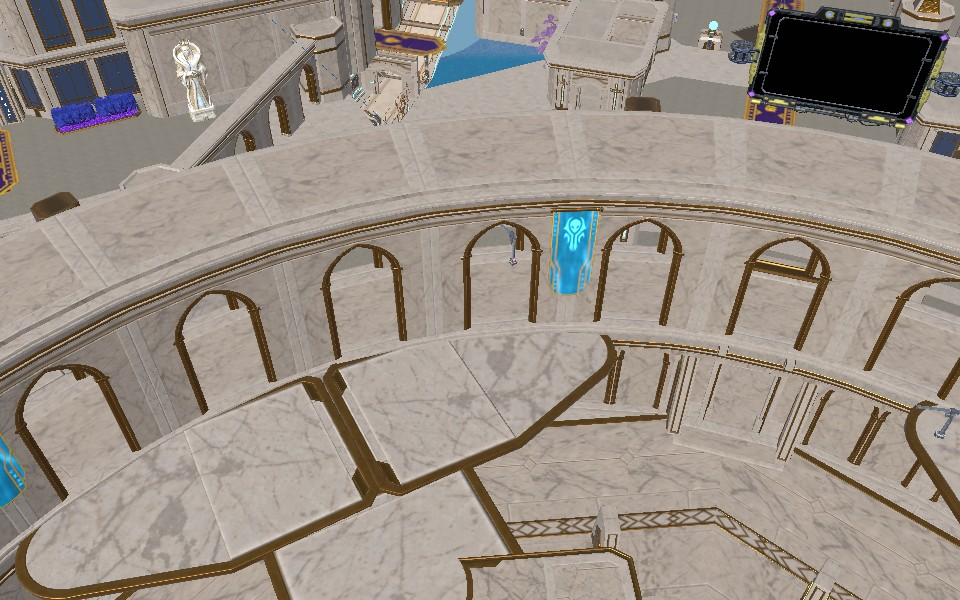
Before · Unity map capture After · Damage concept
After · Damage conceptA tapered breach exposes the wall core. Large facing stones have fallen outward.
Locate this placement on the minimap
World XYZ -61.0, 69.5, 15.0
SM_Megacity_Arena_Wall_Merged_LOD0 · Selected placement
Show map ↑ZONE 1 / TILE 104
05 Coliseum upper gallery
 Before · Unity map capture
Before · Unity map capture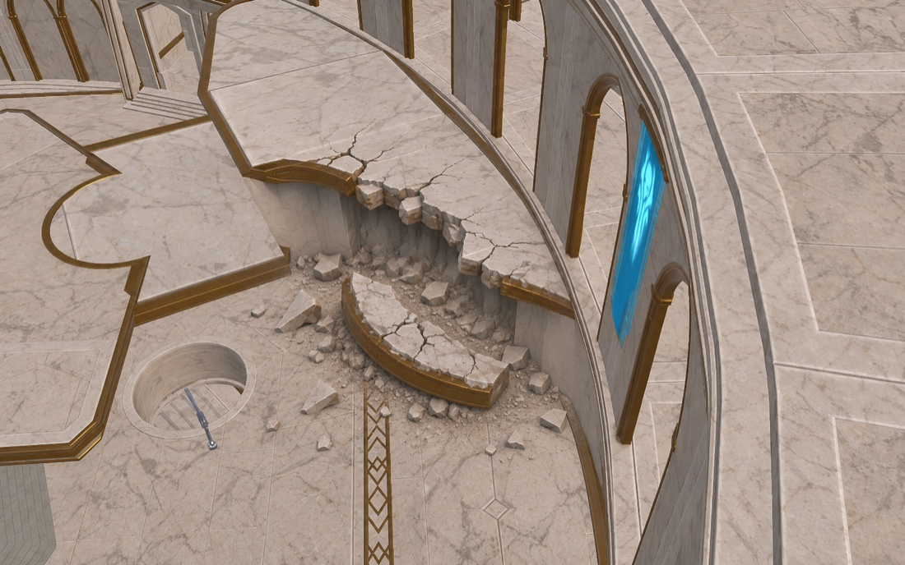
After · Damage conceptDrop a short section of the upper lip onto the terrace below.
Locate this placement on the minimap
World XYZ 63.8, 69.1, -23.9
SM_Megacity_ArenaUpFloor_02_LOD0 · Selected placement
Show map ↑ZONE 1 / TILE 104
06 Coliseum ramp
 Before · Unity map capture
Before · Unity map capture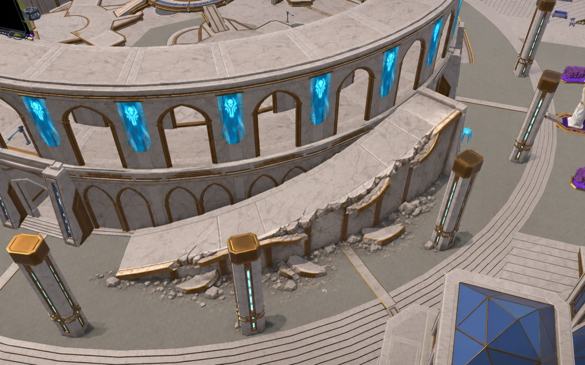
After · Damage conceptPeel back the outer curb and chip the slab edge. Keep the centre of the ramp clear.
Locate this placement on the minimap
World XYZ 12.9, 58.6, 71.6
SM_Megacity_Arena_Ramp_Merged_LOD0 · Selected placement
Show map ↑ZONE 1 / TILE 104
07 City block facade
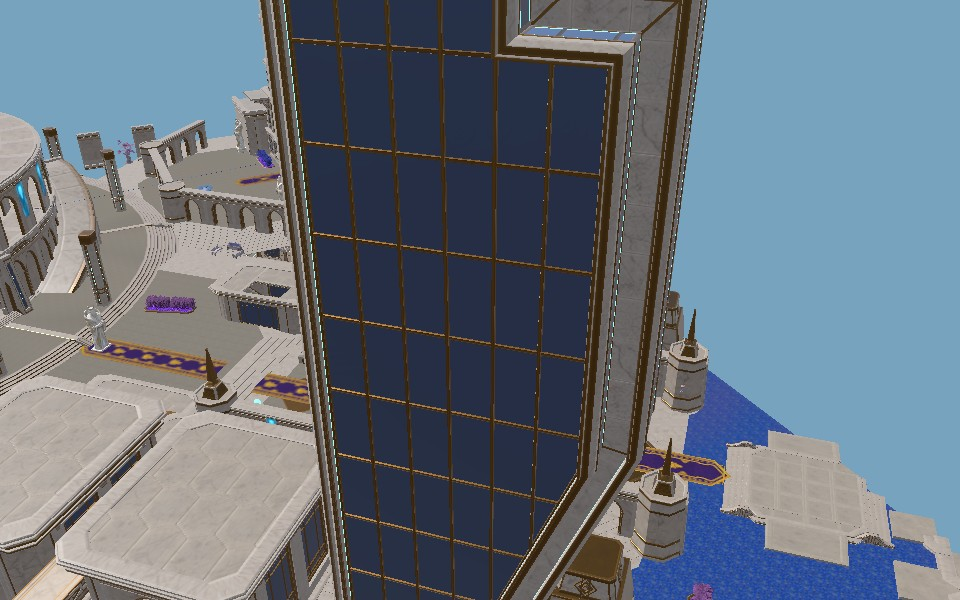
Before · Unity map capture After · Damage concept
After · Damage conceptCollapse one corner between floors and leave the neighbouring bays intact.
Locate this placement on the minimap
World XYZ -121.1, 139.2, 246.7
SM_Megacity_Building_02_LOD0 · Selected placement
Show map ↑ZONE 1 / TILE 104
08 Purple avenue tree
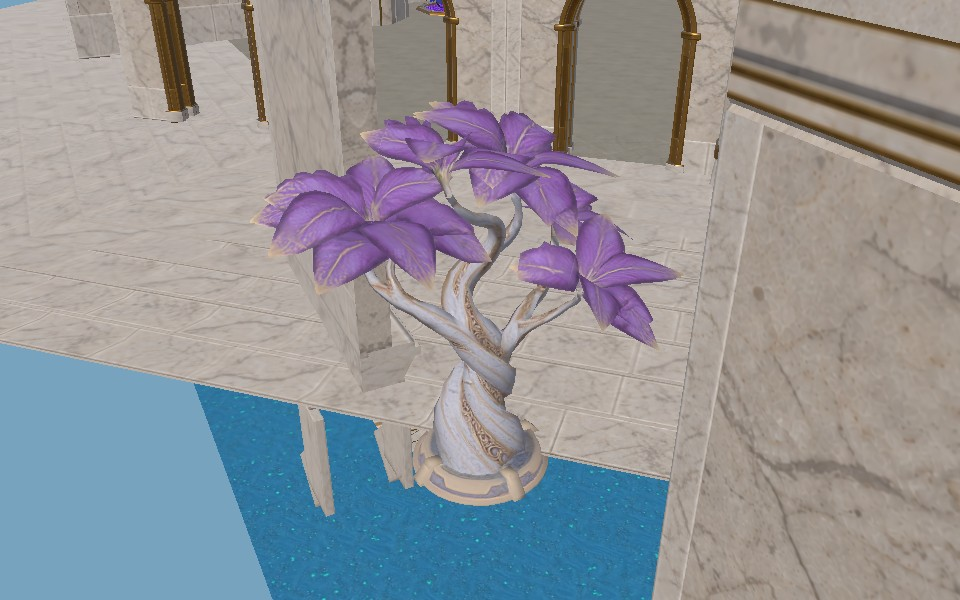
Before · Unity map capture After · Damage concept
After · Damage conceptSplit a side limb at the crotch and scatter purple leaves beneath it.
Locate this placement on the minimap
World XYZ -106.1, 51.2, -95.3
M_City_Tree_Purple_LOD0 · Selected placement
Show map ↑ZONE 1 / TILE 120
09 City curtain wall
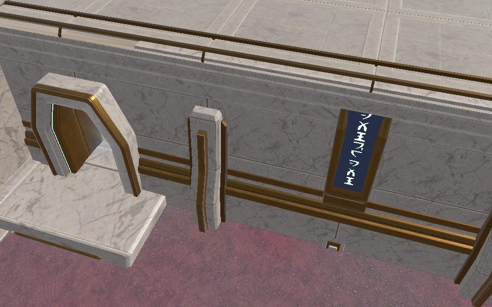
Before · Unity map capture After · Damage concept
After · Damage conceptSpall the outer face and leave a fan of wedge-shaped stones.
Locate this placement on the minimap
World XYZ 358.4, 55.7, 43.1
SM_Megacity_Wall_02_LOD0 · Selected placement
Show map ↑ZONE 1 / TILE 120
10 City column
 Before · Unity map capture
Before · Unity map capture After · Damage concept
After · Damage conceptShear off a corner of the capital and scatter the fragments around the plinth.
Locate this placement on the minimap
World XYZ 224.0, 54.9, -74.2
SM_Megacity_Column_01_LOD0 · Selected placement
Show map ↑ZONE 1 / TILE 120
11 City bridge
 Before · Unity map capture
Before · Unity map capture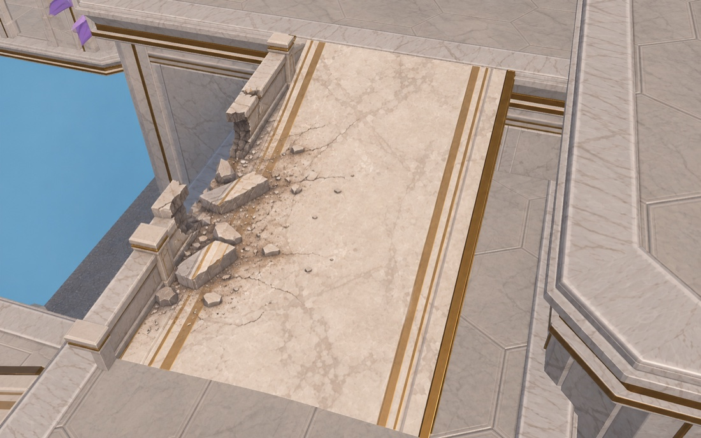
After · Damage conceptBreak the parapet in one bay and leave the deck passable.
Locate this placement on the minimap
World XYZ 192.7, 54.9, 116.6
SM_Megacity_Bridge_01_LOD0 · Selected placement
Show map ↑ZONE 1 / TILE 88
12 Window wall
 Before · Unity map capture
Before · Unity map capture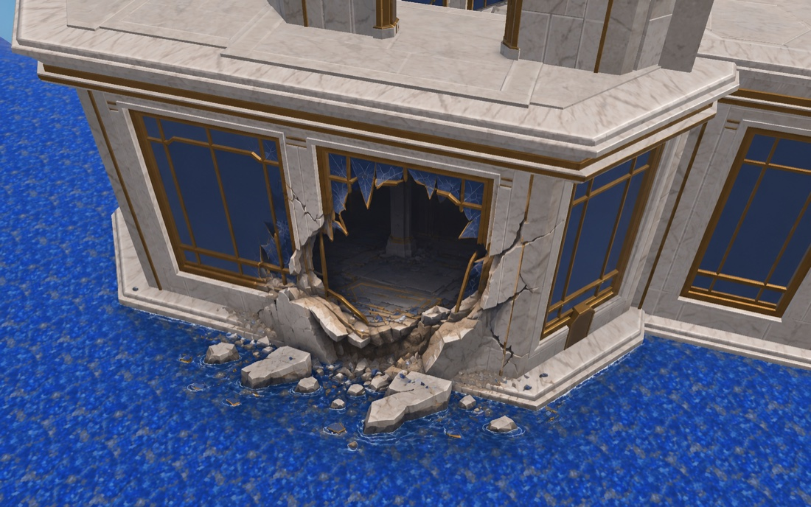
After · Damage conceptBreak the sill outward, exposing a dark jagged opening.
Locate this placement on the minimap
World XYZ -294.4, 54.5, 31.9
SM_Megacity_Wall_Window_01_LOD0 · Selected placement
Show map ↑ZONE 1 / TILE 120
13 City side street
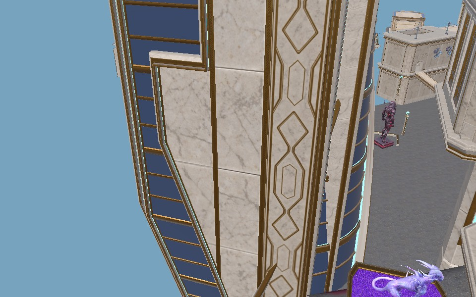
Before · Unity map capture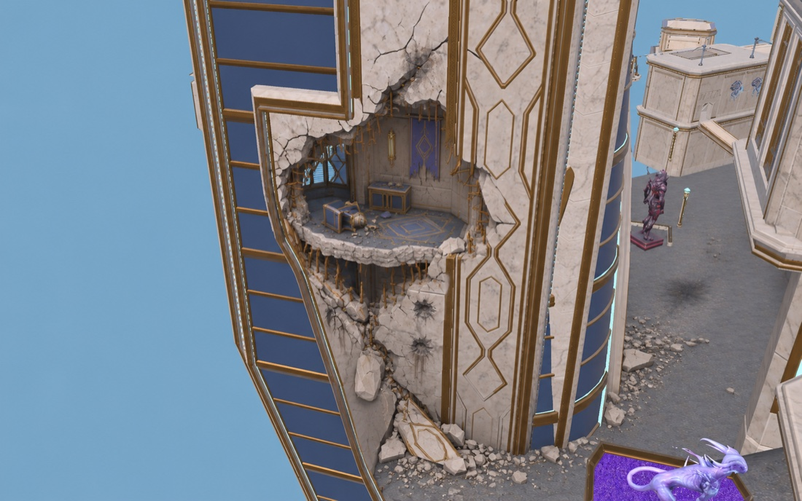
After · Damage conceptExpose the edge of an upper floor behind a torn opening in the street facade.
Locate this placement on the minimap
World XYZ 238.0, 58.5, -95.8
SM_Megacity_Building_03_LOD0 · Selected placement
Show map ↑ZONE 1 / TILE 104
14 Cyan avenue tree
 Before · Unity map capture
Before · Unity map capture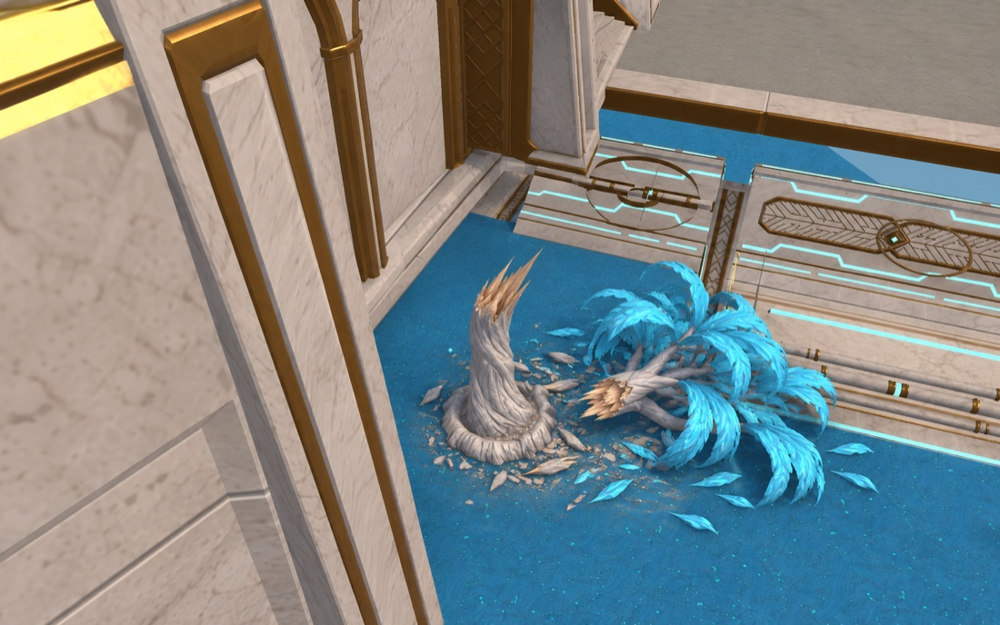
After · Damage conceptSnap the top off at a steep splinter and leave the crown beside the trunk.
Locate this placement on the minimap
World XYZ 50.6, 55.1, -85.9
M_City_Tree_Cyan_LOD0 · Selected placement
Show map ↑ZONE 1 / TILE 87
15 City steps
 Before · Unity map capture
Before · Unity map capture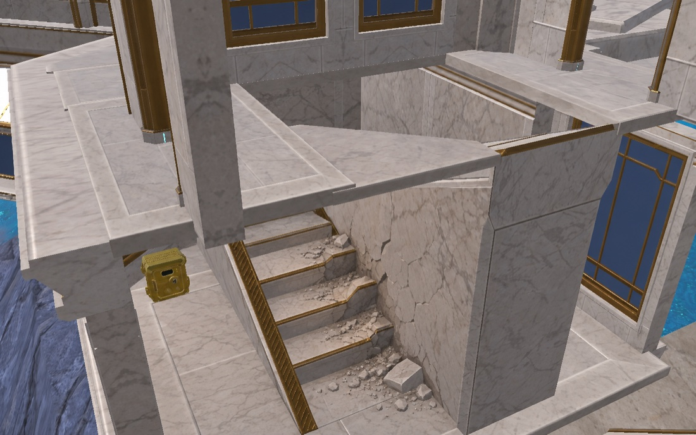
After · Damage conceptChip out one side of three consecutive steps with smaller pieces on the landing.
Locate this placement on the minimap
World XYZ -280.7, 54.8, -108.4
SM_Megacity_Stairs_01_LOD0 · Selected placement
Show map ↑ZONE 2 / TILE 105
16 Maze entrance hedge
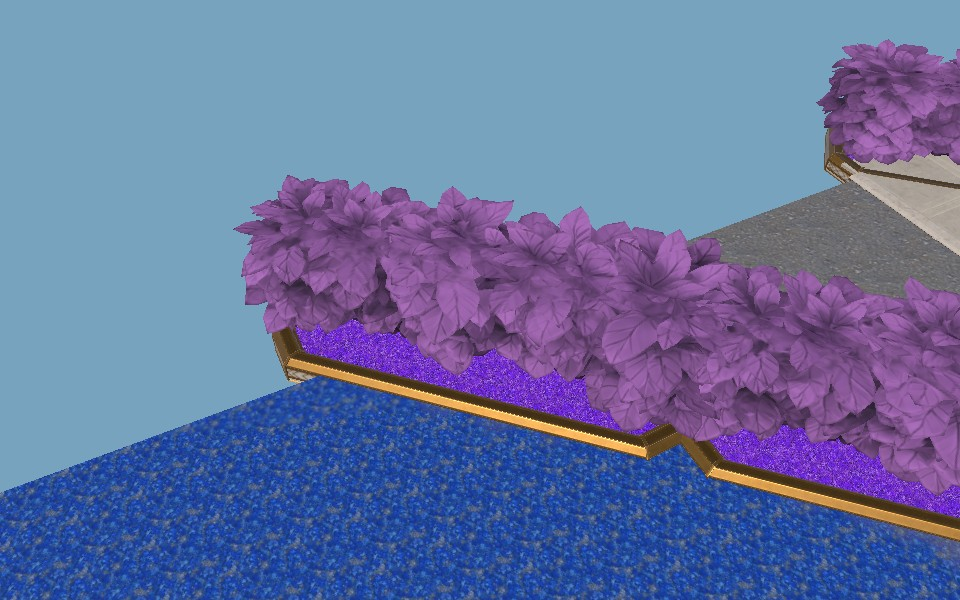
Before · Unity map capture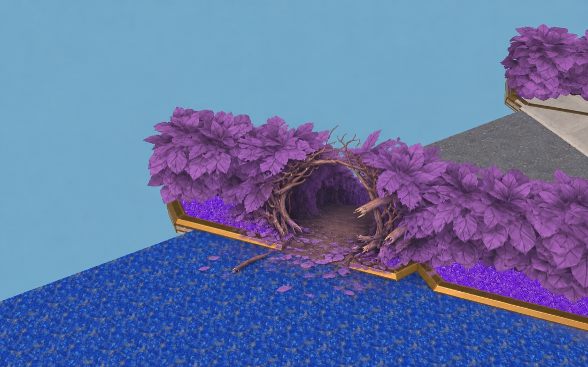
After · Damage conceptTear a low irregular tunnel through the hedge with bare twigs around the rim and scattered leaves.
Locate this placement on the minimap
World XYZ -233.3, 40.8, 375.8
M_Maze_Bush_LOD0 · Selected placement
Show map ↑ZONE 2 / TILE 88
17 Maze hedge corner
 Before · Unity map capture
Before · Unity map capture After · Damage concept
After · Damage conceptCrush the corner downward, leaving a leaning branch and a loose mat of leaves.
Locate this placement on the minimap
World XYZ -542.6, 40.8, 224.9
M_Maze_Bush_LOD0 · Selected placement
Show map ↑ZONE 2 / TILE 89
18 Maze hedge flank
 Before · Unity map capture
Before · Unity map capture After · Damage concept
After · Damage conceptStrip the middle of one side down to bare branches. Preserve its remaining crown.
Locate this placement on the minimap
World XYZ -237.6, 40.8, 611.7
M_Maze_Bush_LOD0 · Selected placement
Show map ↑ZONE 2 / TILE 135
19 Boulder
 Before · Unity map capture
Before · Unity map capture After · Damage concept
After · Damage conceptOpen a diagonal fracture and roll the smaller slab onto the ground nearby.
Locate this placement on the minimap
World XYZ 606.7, 45.7, -103.6
SM_LargeRock_D_LOD0 · Selected placement
Show map ↑ZONE 2 / TILE 121
20 Low rock
 Before · Unity map capture
Before · Unity map capture After · Damage concept
After · Damage conceptShear away a rough wedge, leaving coarse fragments on one side.
Locate this placement on the minimap
World XYZ 302.2, 23.7, 483.1
SM_MediumRock_D_LOD0 · Selected placement
Show map ↑ZONE 2 / TILE 119
21 Willow
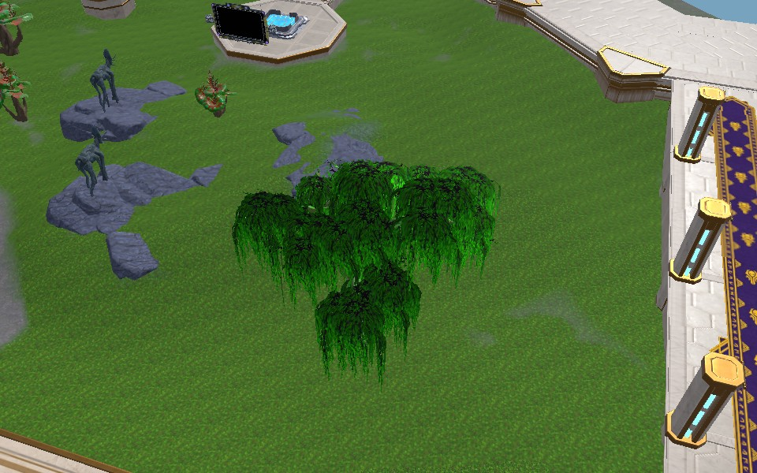
Before · Unity map capture After · Damage concept
After · Damage conceptTear off one low bough and leave it tangled at the roots.
Locate this placement on the minimap
World XYZ 304.2, 54.7, -324.7
SM_WillowTree_01_LOD0 · Selected placement
Show map ↑ZONE 2 / TILE 136
22 Ruins boulder
 Before · Unity map capture
Before · Unity map capture After · Damage concept
After · Damage conceptSplit the upper face into two offset blocks and dust the ground with chips.
Locate this placement on the minimap
World XYZ 614.9, 21.7, 221.6
SM_Ruins_Rock_A_LOD0 · Selected placement
Show map ↑ZONE 2 / TILE 87
23 Dock deck
 Before · Unity map capture
Before · Unity map capture After · Damage concept
After · Damage conceptDent an outer deck panel, tear its edge and leave bent fragments below.
Locate this placement on the minimap
World XYZ -437.4, 69.4, -369.6
SM_DockRuins_Floor_02_LOD0 · Selected placement
Show map ↑ZONE 2 / TILE 121
24 Dock ramp
 Before · Unity map capture
Before · Unity map capture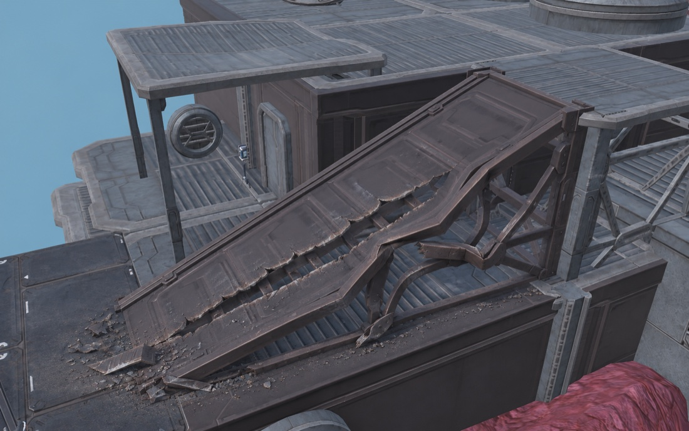
After · Damage conceptTwist the side frame and tear out a narrow strip of decking.
Locate this placement on the minimap
World XYZ 284.3, 43.5, 293.3
SM_DockRuins_FrameRamp_LOD0 · Selected placement
Show map ↑ZONE 2 / TILE 87
25 Dock foundation
 Before · Unity map capture
Before · Unity map capture After · Damage concept
After · Damage conceptKnock out a corner support, exposing bent steel and slab fragments.
Locate this placement on the minimap
World XYZ -376.6, 62.7, -344.0
SM_DockRuins_Foundation_Corner_LOD0 · Selected placement
Show map ↑ZONE 2 / TILE 102
26 Outpost wall
 Before · Unity map capture
Before · Unity map capture After · Damage concept
After · Damage conceptPunch a ragged opening through one panel and fold its lining inward.
Locate this placement on the minimap
World XYZ -66.9, 106.5, -531.6
SM_GenBuilding_Wall_01_LOD0 · Selected placement
Show map ↑ZONE 2 / TILE 121
27 Elixir pad casing
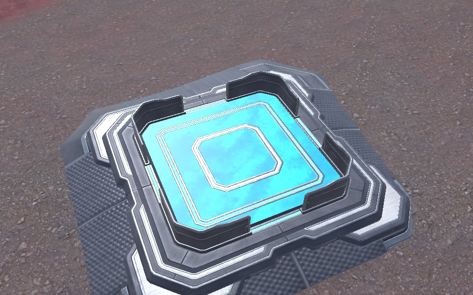
Before · Unity map capture After · Damage concept
After · Damage conceptCrack one protective casing panel and scatter its fragments beside the pad.
Locate this placement on the minimap
World XYZ 474.2, 26.2, 320.0
SM_ElixirPad_Walls_LOD0 · Selected placement
Show map ↑ZONE 2 / TILE 105
28 Stone outcrop
 Before · Unity map capture
Before · Unity map capture After · Damage concept
After · Damage conceptFlake away one large face in overlapping shards, exposing lighter stone.
Locate this placement on the minimap
World XYZ 9.9, 67.2, 581.0
SM_Ruins_Rock_B_LOD0 · Selected placement
Show map ↑ZONE 2 / TILE 119
29 Outer district building
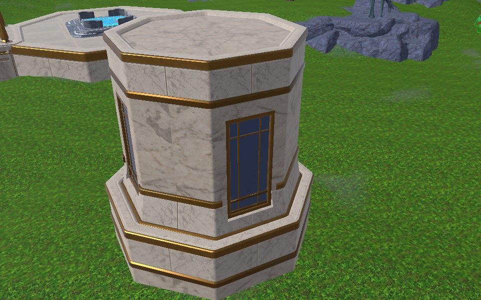
Before · Unity map capture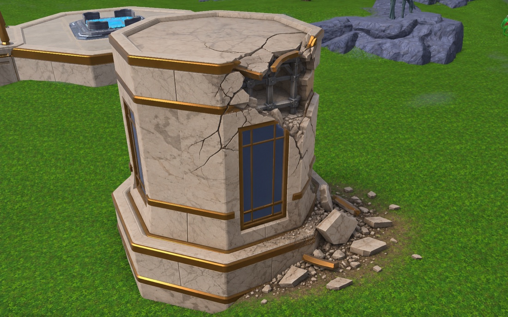
After · Damage conceptBreak open an upper corner and scatter small facing plates below.
Locate this placement on the minimap
World XYZ 471.8, 46.3, -299.6
SM_Megacity_OctBuilding_02_LOD0 · Selected placement
Show map ↑ZONE 2 / TILE 121
30 Dock pipe
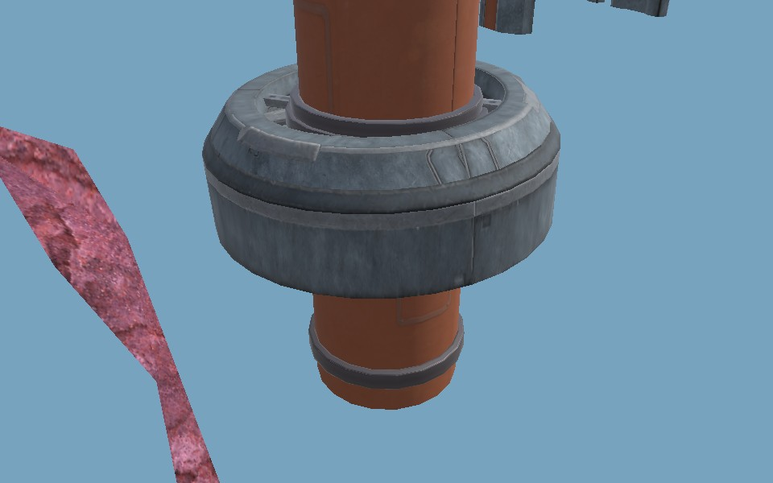
Before · Unity map capture After · Damage concept
After · Damage conceptTear one pipe joint apart and leave a twisted collar by its base.
Locate this placement on the minimap
World XYZ 299.7, 16.0, 301.8
SM_DockRuins_Pipe_01_LOD0 · Selected placement
Show map ↑ZONE 3 / TILE 10
31 Beach sand crater
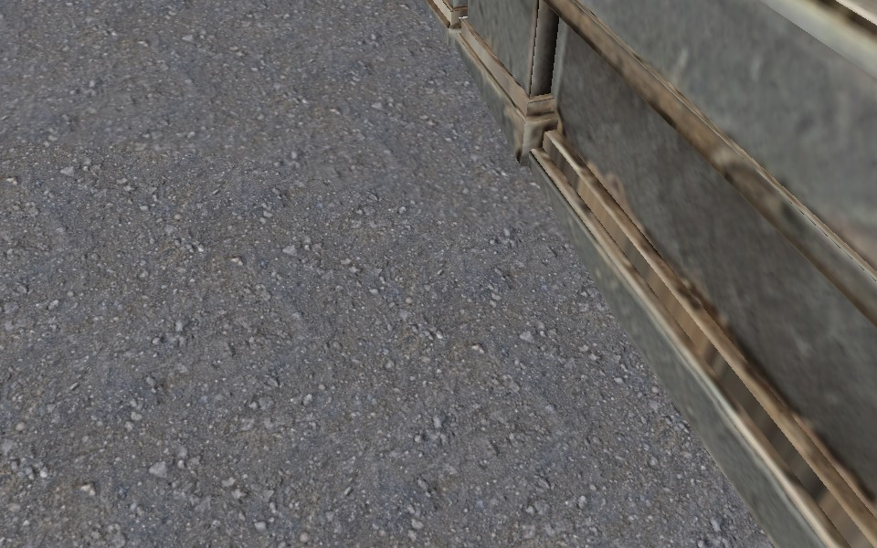
Before · Unity map capture After · Damage concept
After · Damage conceptScoop an asymmetric impact crater in the sand beside the beach stone, with a raised sand lip and scattered pebbles.
Locate this placement on the minimap
World XYZ -2180.5, 4.1, 801.9
SM_BeachStone_01_LOD0 · Terrain crater beside landmark
Show map ↑ZONE 3 / TILE 36
32 Pier deck
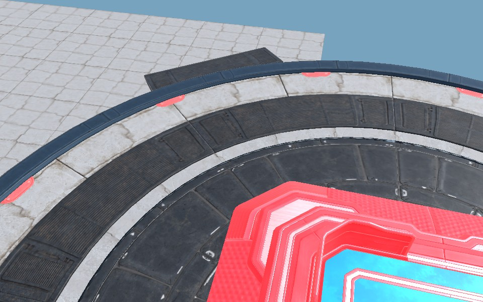
Before · Unity map capture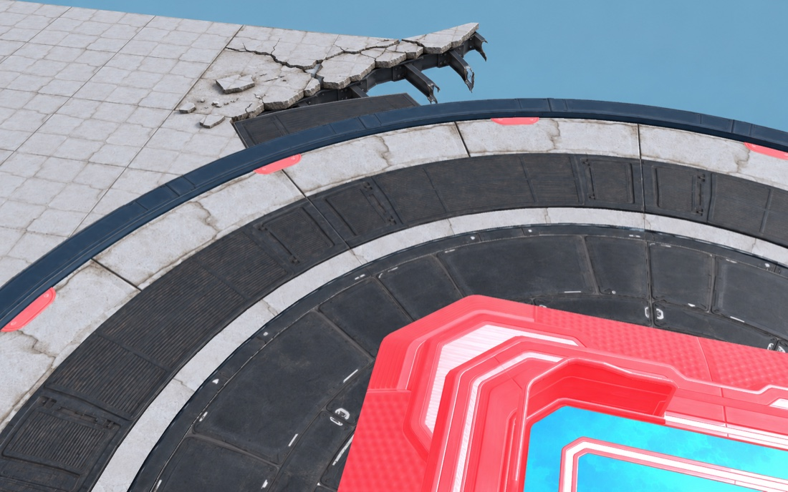
After · Damage conceptCrack through an outer deck bay and twist its joists downward.
Locate this placement on the minimap
World XYZ -1376.5, 14.2, -1525.8
SM_DockRuins_Floor_01_LOD0 · Selected placement
Show map ↑ZONE 3 / TILE 51
33 Dock extractor
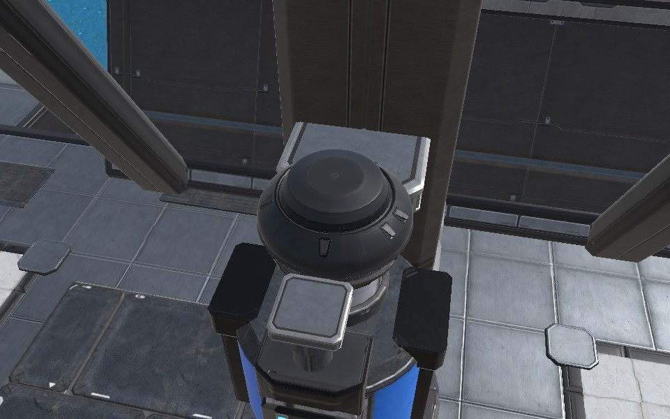
Before · Unity map capture After · Damage concept
After · Damage conceptTilt the damaged extractor head off its mount with a torn casing, leaving neighbouring equipment intact.
Locate this placement on the minimap
World XYZ -1110.5, 23.5, -1821.9
SM_DockRuins_Extractor_Head_LOD0 · Selected placement
Show map ↑ZONE 3 / TILE 194
34 Beach boulder
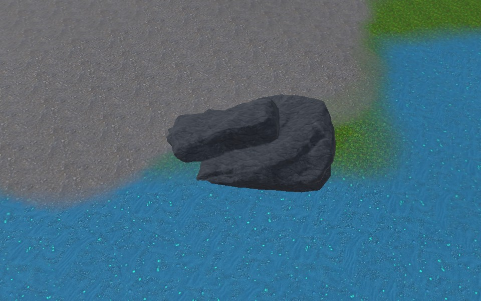
Before · Unity map capture After · Damage concept
After · Damage conceptSplit the boulder on its natural grain with a trail of small fragments on the sand.
Locate this placement on the minimap
World XYZ 2213.8, 3.8, -2019.9
SM_BeachStone_03_LOD0 · Selected placement
Show map ↑ZONE 3 / TILE 66
35 Crystal shard
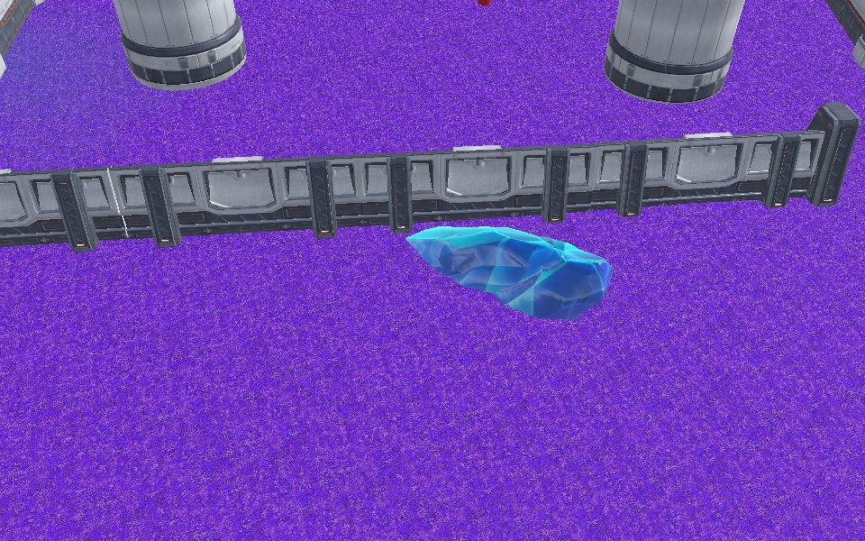
Before · Unity map capture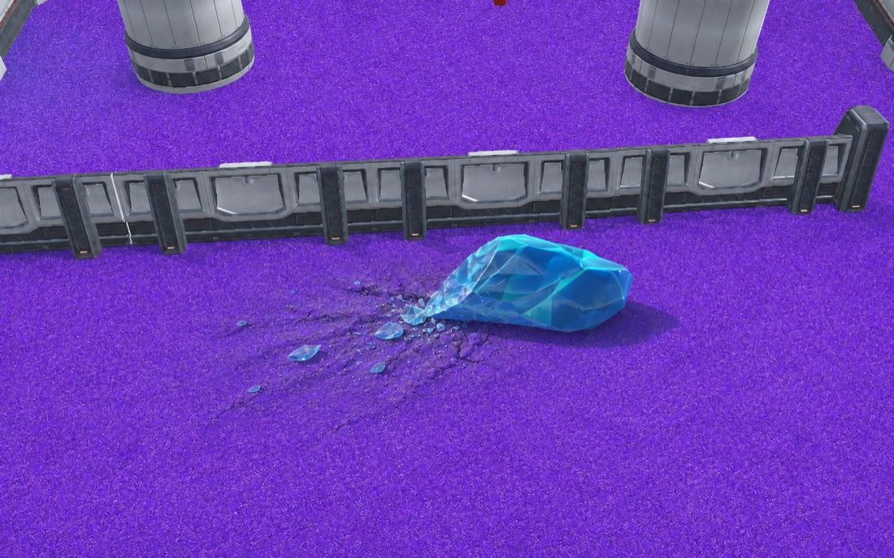
After · Damage conceptBreak the crystal tip on an angled plane and leave translucent splinters on the ground.
Locate this placement on the minimap
World XYZ -766.7, 4.1, -2132.0
SM_Crystal_Large_02_LOD0 · Selected placement
Show map ↑ZONE 3 / TILE 4
36 Crystal cluster
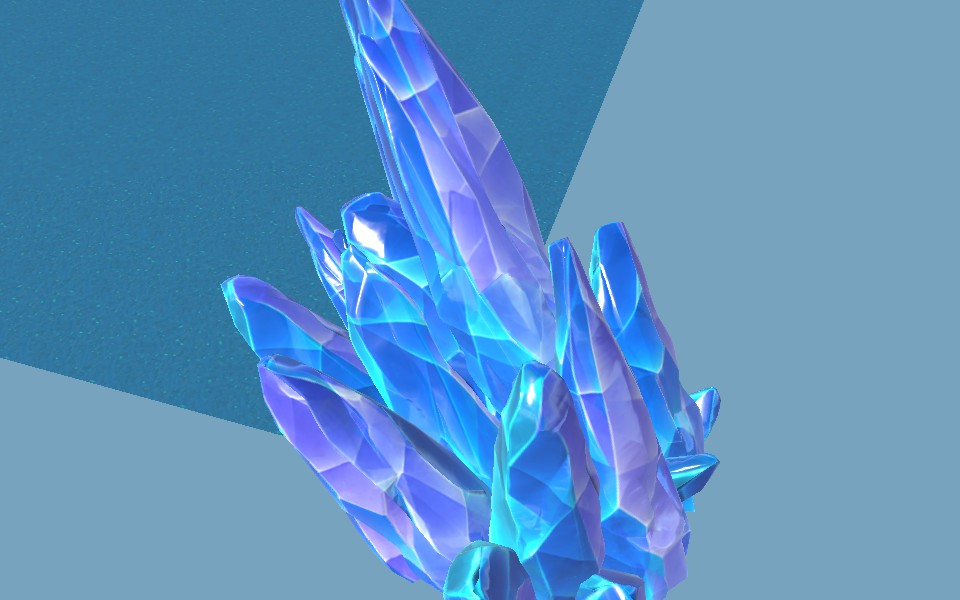
Before · Unity map capture After · Damage concept
After · Damage conceptShatter one side of the cluster and scatter shards among the surviving crystals.
Locate this placement on the minimap
World XYZ -2130.6, 17.6, -1223.4
SM_Crystal_Large_Pile_02_LOD0 · Selected placement
Show map ↑ZONE 3 / TILE 150
37 Swamp temple gate
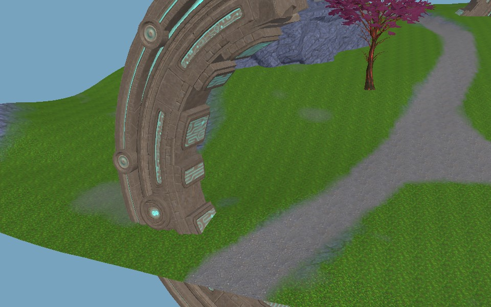
Before · Unity map capture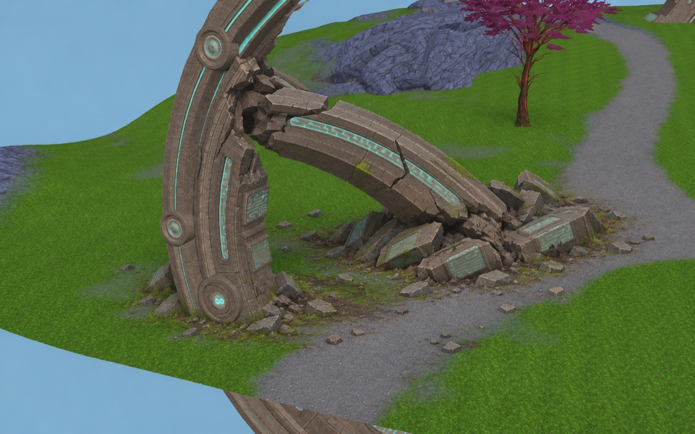
After · Damage conceptCollapse one jamb and let the lintel settle diagonally into broken stone.
Locate this placement on the minimap
World XYZ 991.3, 32.1, -825.4
SM_SunkTemple_Gate_02_LOD0 · Selected placement
Show map ↑ZONE 3 / TILE 116
38 Temple balcony
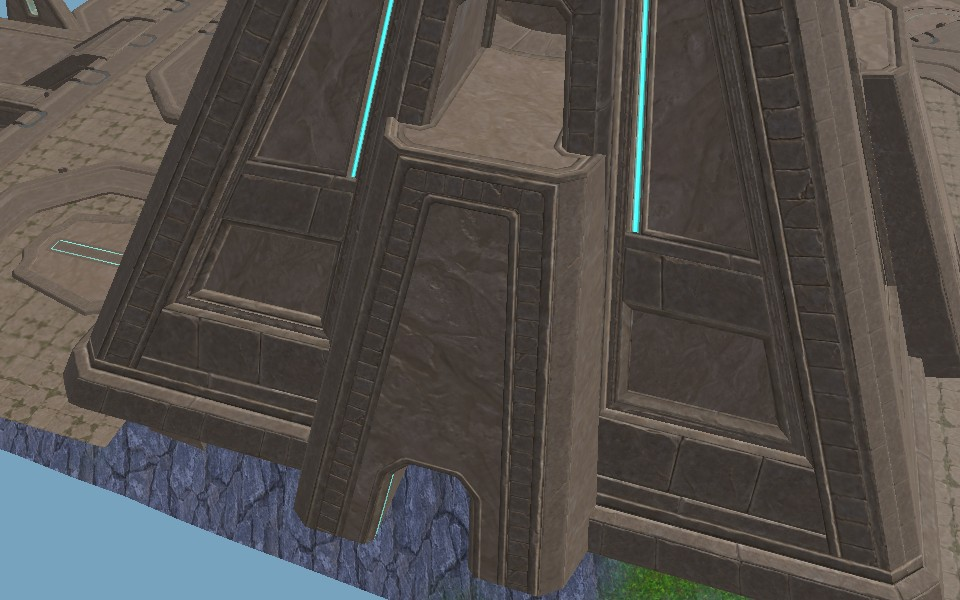
Before · Unity map capture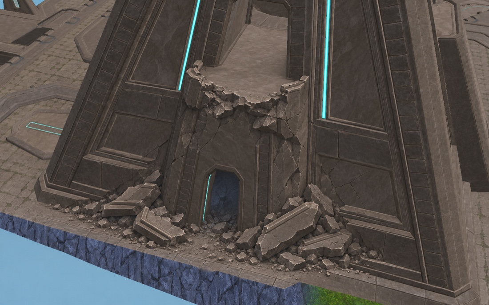
After · Damage conceptBreak away the projecting lip with slabs piled against the base.
Locate this placement on the minimap
World XYZ 151.7, 111.8, -1338.0
SM_SunkTemple_Pyramid_Balcony_LOD0 · Selected placement
Show map ↑ZONE 3 / TILE 106
39 Swamp tree
 Before · Unity map capture
Before · Unity map capture After · Damage concept
After · Damage conceptSnap the trunk low with a jagged fork and lay the upper trunk beside its roots.
Locate this placement on the minimap
World XYZ -37.5, 62.4, 694.9
polySurface13 · Selected placement
Show map ↑ZONE 3 / TILE 214
40 Swamp willow
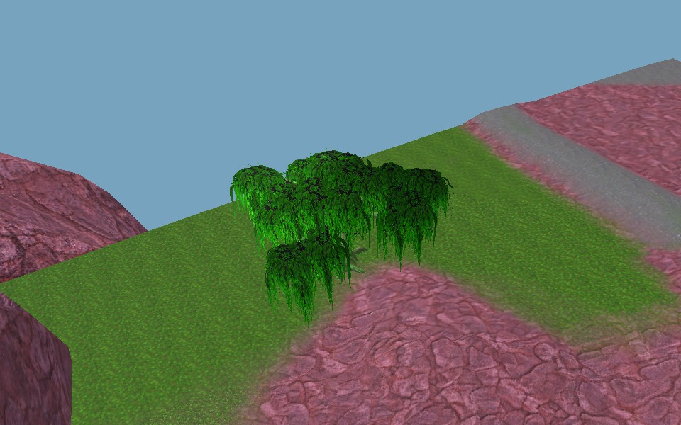
Before · Unity map capture After · Damage concept
After · Damage conceptBreak a heavy branch at its joint and leave smaller twigs around the fallen limb.
Locate this placement on the minimap
World XYZ 2516.9, 43.9, -814.5
SM_WillowTree_01_LOD0 · Selected placement
Show map ↑ZONE 3 / TILE 47
41 Forest tree
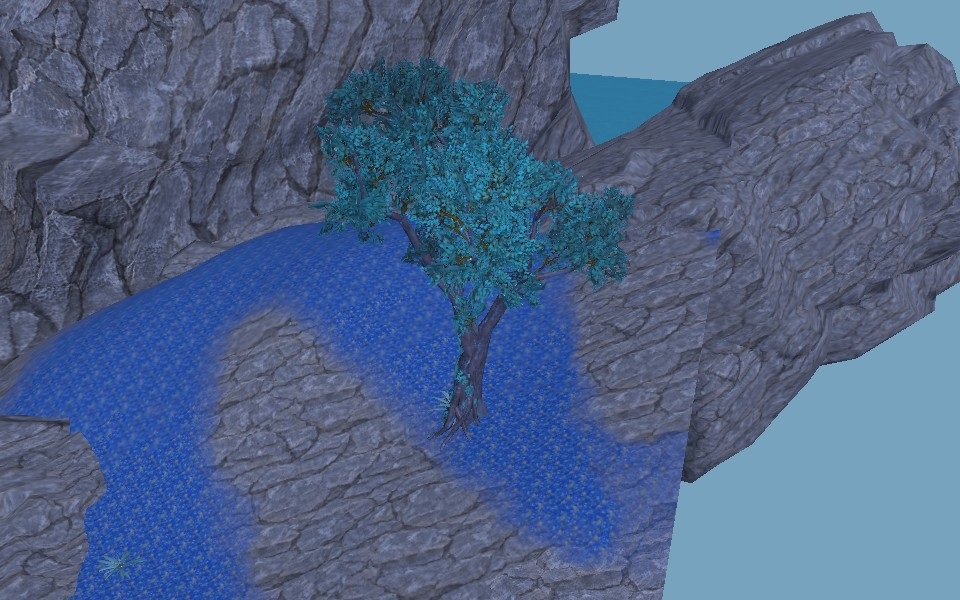
Before · Unity map capture After · Damage concept
After · Damage conceptExpose a splintered trunk beneath a fallen crown with a directional scatter of branches.
Locate this placement on the minimap
World XYZ -1387.2, 54.3, 2590.8
SM_TallTree_01_LOD0 · Selected placement
Show map ↑ZONE 3 / TILE 172
42 Forest rock candidate
 Before · Unity map capture
Before · Unity map capture After · Damage concept
After · Damage conceptFracture the boulder into angular blocks nested into the terrain.
Locate this placement on the minimap
World XYZ 1386.4, 51.5, 1696.0
SM_LargeRock_C_LOD0 · Selected placement
Show map ↑ZONE 3 / TILE 155
43 Desert tree
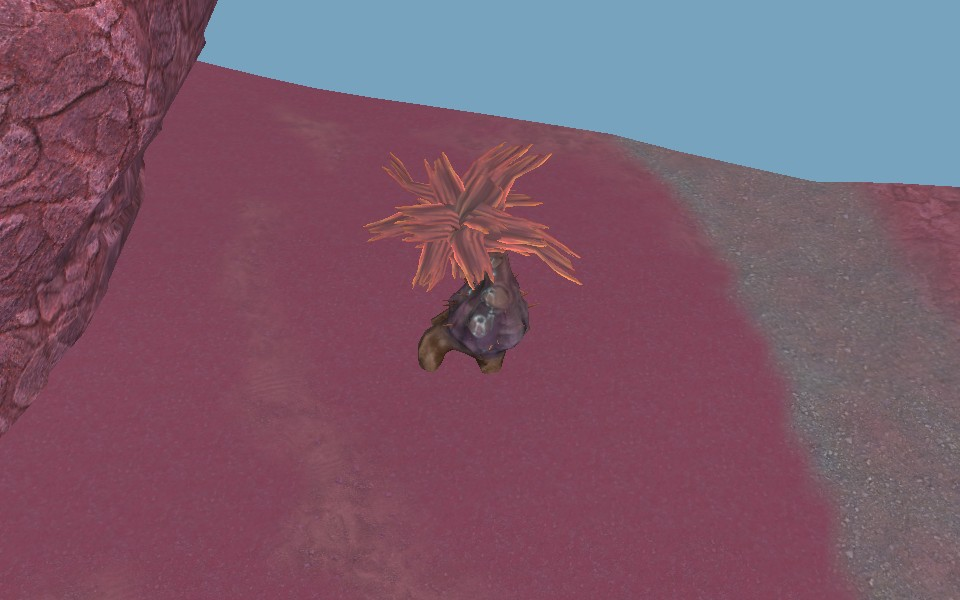
Before · Unity map capture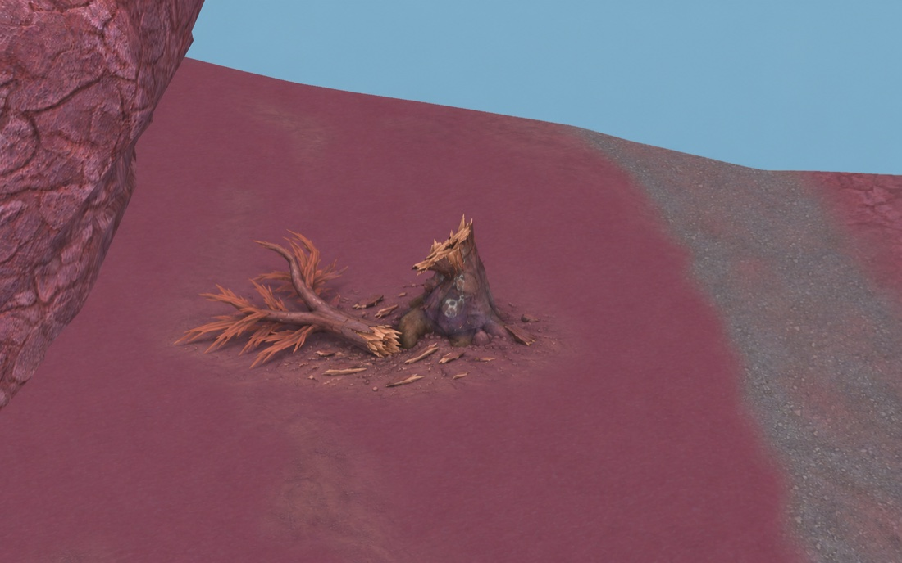
After · Damage conceptSnap the dry trunk unevenly and drop its forked limb against the ground.
Locate this placement on the minimap
World XYZ 1219.0, 20.0, 1371.2
SM_DesertTree_01_LOD0 · Selected placement
Show map ↑ZONE 3 / TILE 109
44 Desert rock candidate
 Before · Unity map capture
Before · Unity map capture After · Damage concept
After · Damage conceptSpall the sun-facing rock face and leave finer rubble downslope.
Locate this placement on the minimap
World XYZ 134.0, 21.0, 1926.6
SM_MediumRock_E_LOD0 · Selected placement
Show map ↑ZONE 3 / TILE 39
45 Second sand impact
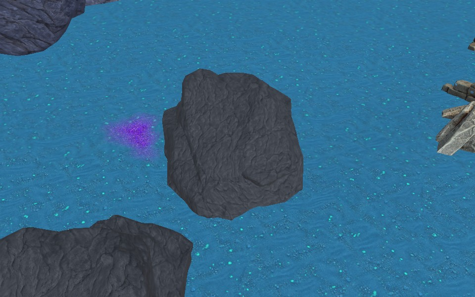
Before · Unity map capture After · Damage concept
After · Damage conceptCut a shallow oblique gouge beside the rock with a crescent of displaced sand.
Locate this placement on the minimap
World XYZ -1566.4, 9.6, -229.4
SM_BeachStone_02_LOD0 · Terrain crater beside landmark
Show map ↑